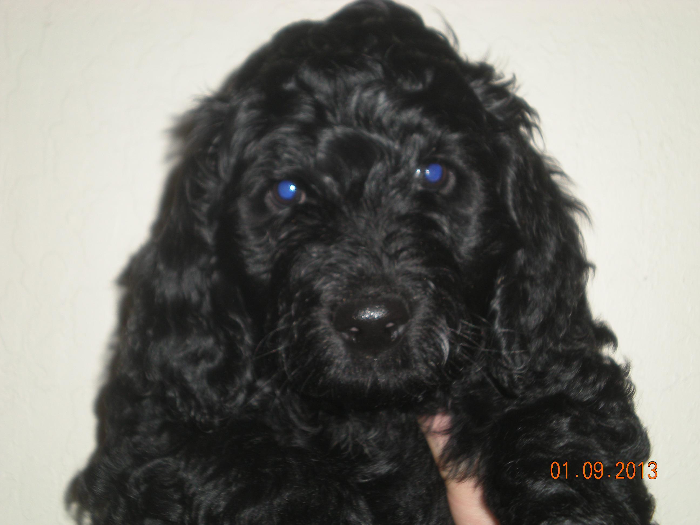
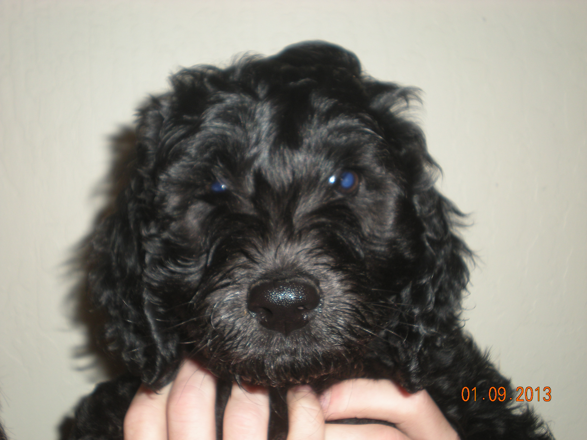
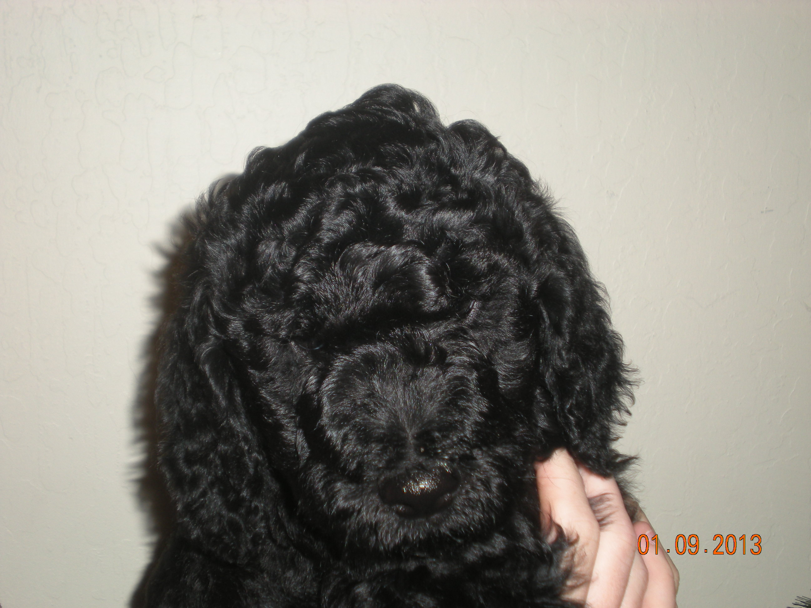

Mr. Mellow
Tiny white mark on chest. Cuddly and sweet!

Mr. Playful
Lively and fun. Cute face!

Mr. Sweetie
Curly hair on face and legs. Loves to cuddle!

Goldendoodles!
3 adorable males! Cute personalities!Lovingly raised. Smart! Great family dog!
Ultra non-shed - hypoallergenic!
Ready to go home 01/18/2013
Call for more information:
Carolyn Dyer
(925) 943-7837